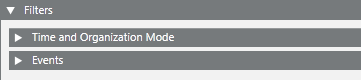

Configure the Event Settings Rule Filters
You must configure at least one filter for the event settings rule—otherwise it will never execute.
- In the Event Settings tab, open the Filters expander. Here you can configure when and for what combination of event conditions this rule will run. For details, see Filters of an Event Settings Rule.
- Do one of the following:
- Open the Time and Organization Mode expander and specify the time-dependent pre-conditions of the event settings rule. For details, see Time and Organization Mode Conditions.
- Open the Events expander and specify the combination of events that will trigger the event settings rule. For details, see Events Conditions.
NOTE: In a distributed system, when specifying the target objects affected by the event, you can only link objects belonging to the local (system) project. Linking target objects belonging to other projects is not allowed.
